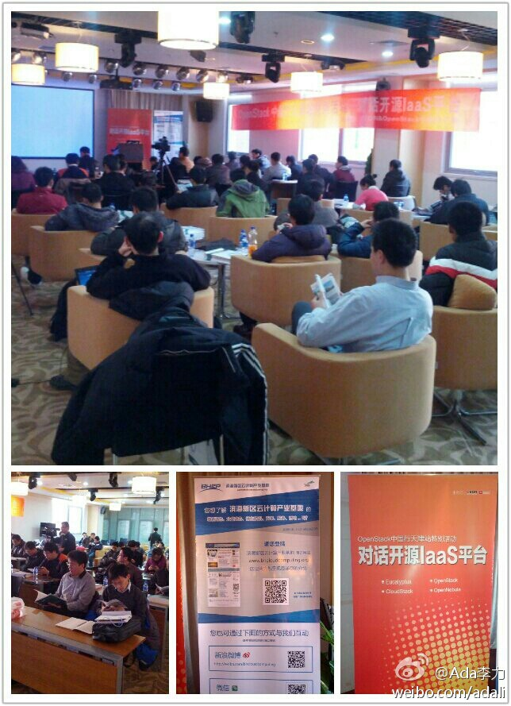

包研也说时间太短，有些问题要邮件请各位讲师继续解答，期待这周的长篇报道。//@CloudStack中国: @CSDN包研 的问题还是挺尖锐的. 另外大家都介绍一下云平台的商业应用是很好的.@Ada李力:#OpenStack#中国行天津站。最后也是最重要的环节panel, 贴合了活动的副标题： 对话开源IaaS平台。由CSDN云频道记者包研主持，从左至右 @CSDN包研 @Marshal-Liu @田亮-云计算 @qyjohn_ @程辉 @lee-xh
这次活动是@滨海新区云计算产业基 协助举办的。活动中，感受到天津经济技术开发区政府工作人员的务实，细致和认真的作风。@Ada李力:#OpenStack#中国行天津站，对话开源IaaS平台。天津经济技术开发区很不错，会场也很不错。 
现场手机拍的照片已上传到ITEYE上OpenStack群组：网页链接@Ada李力:#OpenStack#中国行天津站。最后也是最重要的环节panel, 贴合了活动的副标题： 对话开源IaaS平台。由CSDN云频道记者包研主持，从左至右 @CSDN包研 @Marshal-Liu @田亮-云计算 @qyjohn_ @程辉 @lee-xh
姣姣今天给我展示一根修好的自动铅笔，是同学晨晨带回家让爸爸修好的，姣姣很崇拜地说晨晨爸爸什么都会修。之前学校活动中这位爸爸不和人交流，也不笑，加上瘦高的个子，让人觉得难以接近。周末知道这个爸爸也是IT男时，立马觉得亲切许多。